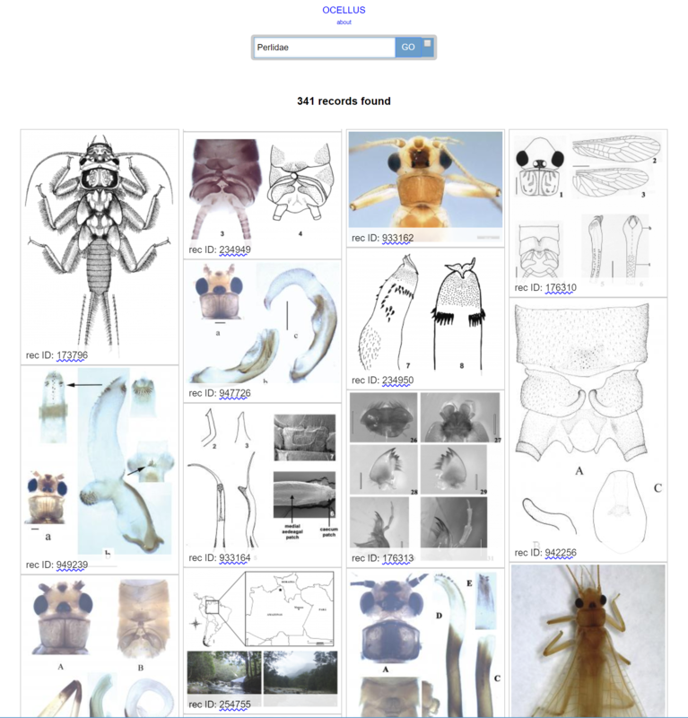

200.000 deposits at the Biodiversity Literature Repository!

Ocellus: Search term “Perlidae”. All the images are provided with a link to the source.
The wealth of data encapsulated in scientific publications is a well-guarded secret. The recent discussions around Open Access are centered around open access to the articles, and thus little effort is made to build an index, for example, of all the illustrations therein. This is even more astounding in descriptive sciences, such as biological taxonomy, dealing with discovering and describing the world’s biological diversity, where each article includes an average of 7.2 illustrations.
These illustrations are made for the purpose to illustrate and build a comparative corpus of data to describe and identify – by comparing highly standardized illustrations – the world’s species. From a legal point of view, these figures to not qualify as work - something unique, innovative, novel - and thus are not copyrighted and can be re-used. The citation of them is not just science means, but necessary to understand the origin, not only the author but increasingly the specimen and all the data attached to it.
Based on these presumptions, through a daily data extraction workflow, over 172.000 published, scientific illustrations have been deposited to The Biodiversity Literature Repository. Together with articles, more than 200.000 all together. Each deposit includes citation of the source, but more importantly also taxonomic treatments deposited in TreatmentBank, referring to those illustrations.
These deposits represent over 50% of all the deposits in Zenodo, in which the Biodiversity Literature Repository is one of their communities. At the same time, the occupy only 1.2% of the physical space of Zenodo. This calls for a rapid expansion of the process to add more data.
The value of Zenodo is its robustness, speed of service, standardization, minting of persistent identifiers (i.e. DataCite DOIs), the emphasis on adding related items, machine upload, the export in various formats and sustainability. This allows, and necessitates, building applications on top of it.
Currently the Biodiversity Literature Community is working on Ocelllus to provide a visual access to the data, and to document the API so others can be encouraged to use this unique resource.
The Biodiversity Literature Repository is an open community run currently by Plazi and Pensoft. Publishers and scientists are encouraged to help to contribute to enhance a resource.
Source: EurekAlert!
Links: